Introduction to version control with Git
Scientific workflows: Tools and Tips 🛠️
2023-06-15
What is this lecture series?
Scientific workflows: Tools and Tips 🛠️
📅 Every 3rd Thursday 🕓 4-5 p.m. 📍 Webex
- One topic from the world of scientific workflows
- For topic suggestions send me an email
- If you don’t want to miss a lecture
- Check out the lecture website
- Subscribe to the mailing list
- Slides provided on Github
Motivation
Two examples in which proper version control can be a life/time saver
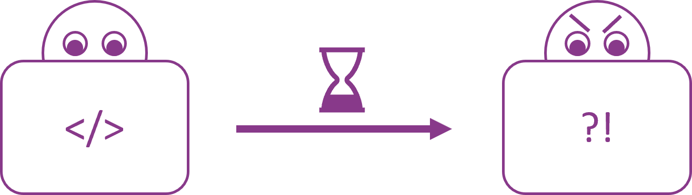
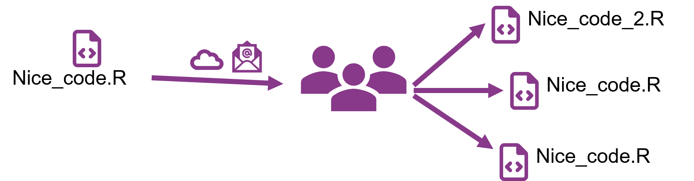
Requirements for good version control
Complete and long-term history of every file in your project
Safe (e.g. no accidental loss of versions)
Easy to use
Overview and documentation of all changes
Collaboration should be possible
Version control with Git
Open source and free to use version control software
Quasi standard for software development
A whole universe of other software and services around it
Today
- Basic concepts of Git
- A simple workflow in theory and practice
- A small outlook on more advanced features
Version control with Git
For projects with mainly text files (e.g. code, markdown files, …)
Basic idea: Take snapshots of your project over time
- Snapshots are called commits in Git
A project that is version controlled with Git is called Git repository (or Git repo)
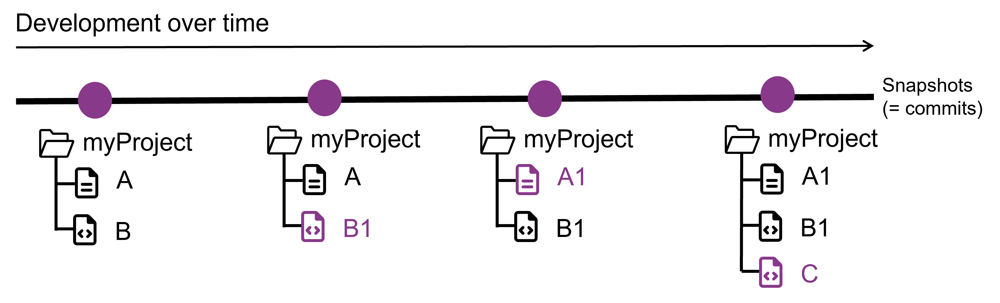
Version control with Git
Git is a distributed version control system
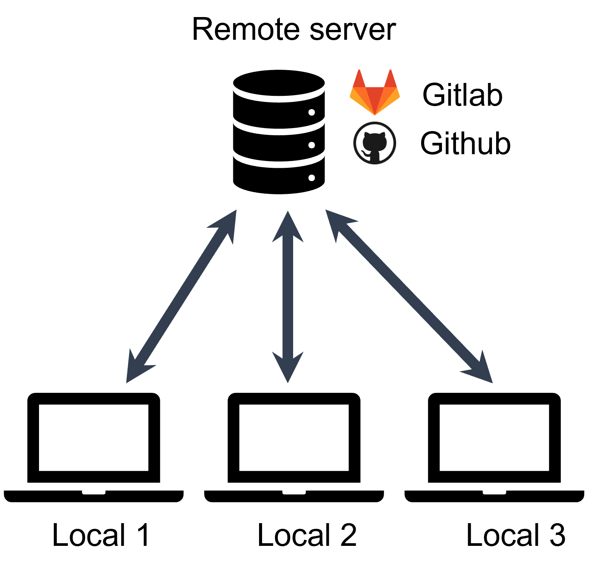
- Idea: many local repositories synced via one remote repo
- Every machine has full-fledged version of repository with entire history
How to use Git
After you installed it there are different ways to use the software for your projects
How to use Git - Terminal
Using Git from the terminal

r fontawesome::fa(name = "plus", fill = "green") Gives you most control
r fontawesome::fa(name = "plus", fill = "green") You find a lot of help online
r fontawesome::fa(name = "minus", fill = "red") You need to use the terminal
How to use Git - GUIs
A Git GUI is integrated in most (all?) IDEs, e.g. R Studio
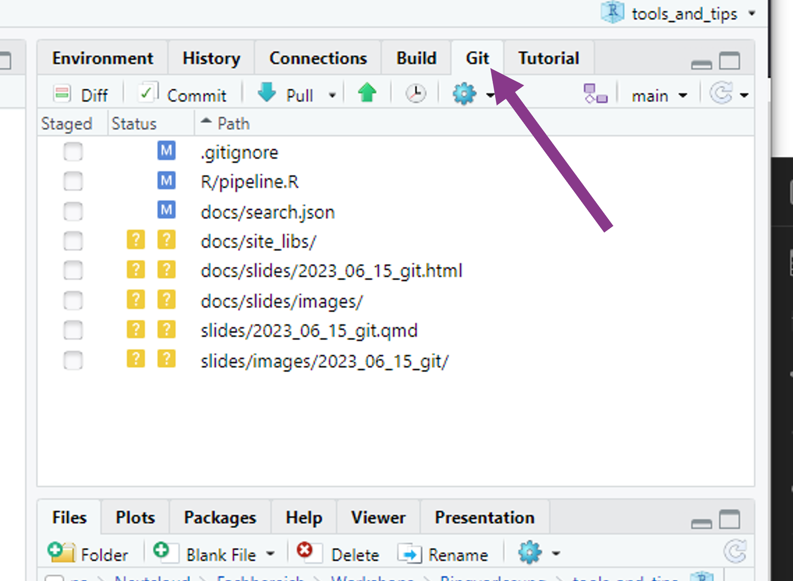
r fontawesome::fa(name = "plus", fill = "green") (Often) Easy and intuitive
r fontawesome::fa(name = "plus", fill = "green") Stay inside your IDE
r fontawesome::fa(name = "minus", fill = "red") Not universal
How to use Git - GUIs
Standalone Git GUI software, e.g. Github Desktop
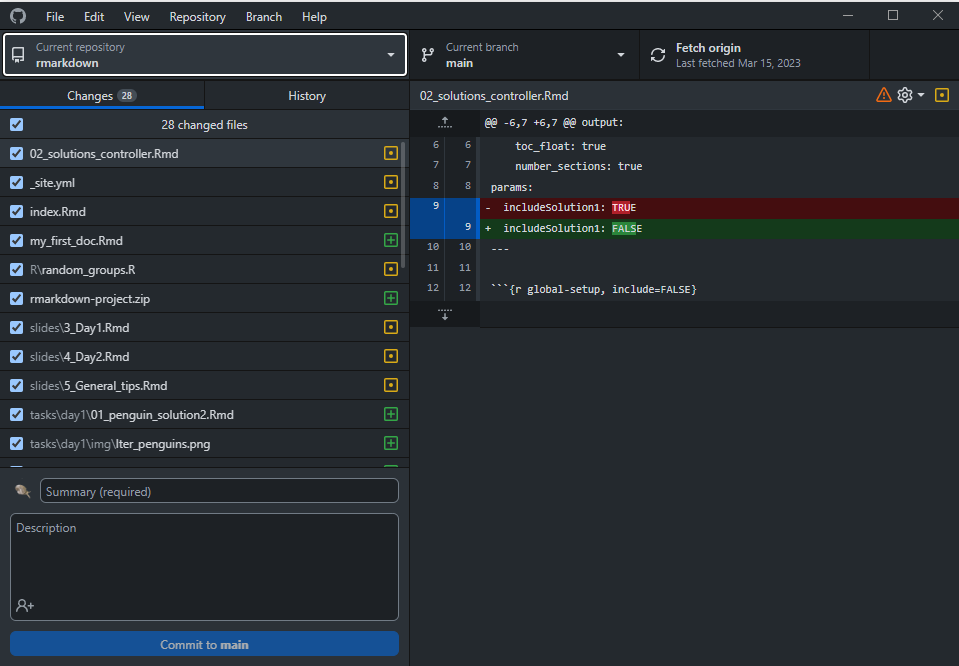
r fontawesome::fa(name = "plus", fill = "green") Easy and intuitive
r fontawesome::fa(name = "plus", fill = "green") Helps with initial setup of Git
r fontawesome::fa(name = "plus", fill = "green") Nice integration with Github
r fontawesome::fa(name = "minus", fill = "red") Switch program to use Git
How to use Git
Which one to choose?
- Depends on your prior experience and taste
- If you never used the terminal before, I recommend to start with Github Desktop
- But in the long run, it’s definitely worth it looking into the terminal
- You can also mix methods and freely switch between them
The basic Git workflow
git init,git add,git commit,git push
Step 1: Initialize a git repository
- Adds a (hidden)
.gitfolder to your project that will contain the Git repository - You don’t have to touch anything that is in this folder
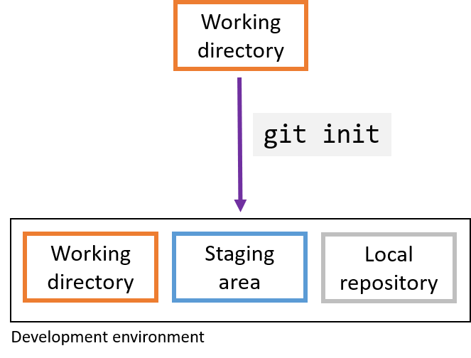
Step 2: Modify files and stage changes
Git detects any changes in the working directory
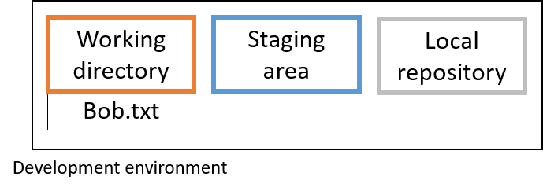
Step 2: Modify files and stage changes
When you want a file to be part of the next commit (i.e. snapshot), you have to stage the file
- In the terminal use
git add - Usually in Git GUIs this is just a check mark next to the file name
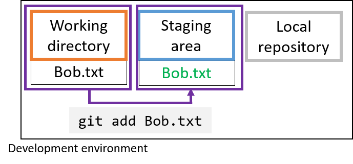
Step 3: Commit changes
Commits are the snapshots of your project states
Commit work from staging area to local repository
- Collect meaningful chunks of work in the staging area, then commit
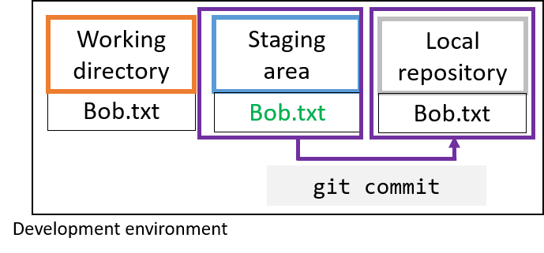
- After a commit, your changes are part of your project’s git history
Step 3: Commit changes
- Every commit has a unique identifier (so-called hash)
- You can use this hash to come back to the version
- Every commit has a commit message that describes what the changes are about
Step 4: Create and connect a remote repo
Remote repositories are on a server and can be used to synchronize, share and collaborate
Remote repositories can be private (only for you and selected collaborators) or public (visible to anyone online)
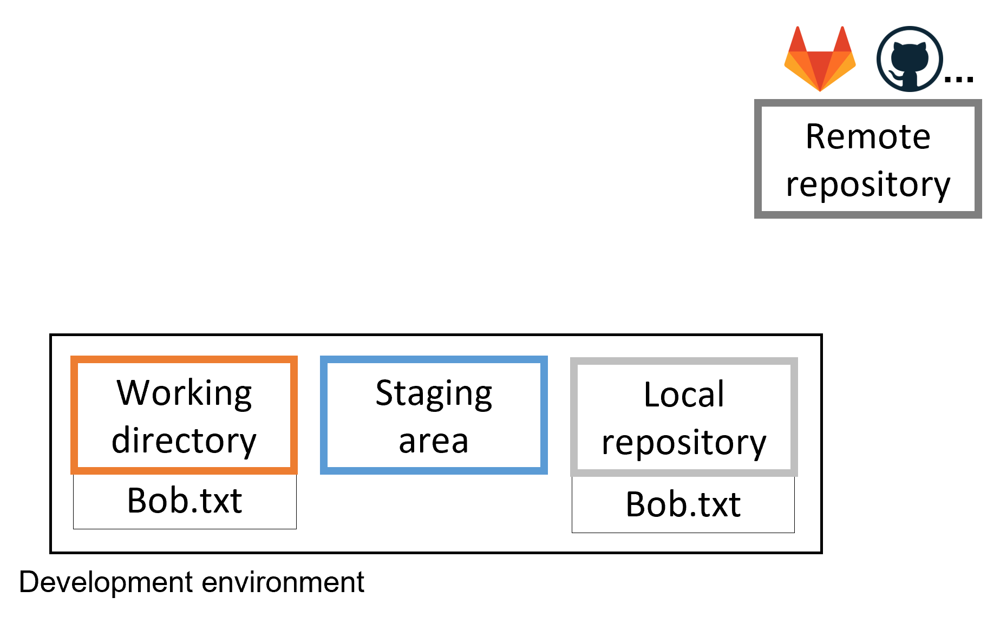
Step 5: Share your changes with the remote repo
- Push your local changes to the remote with
git push
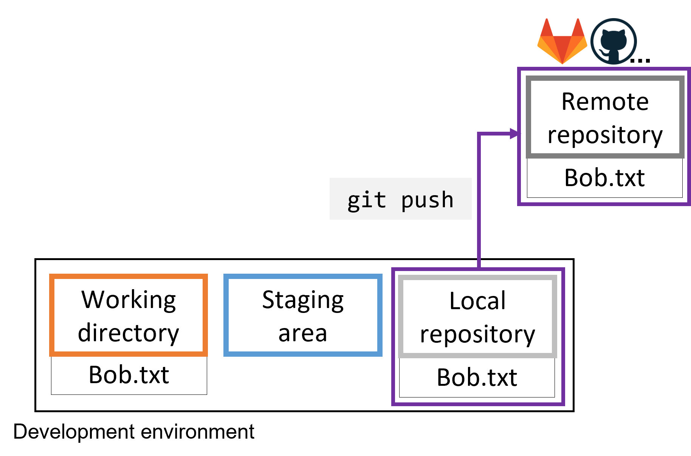
Summary of the basic steps
git init: Initialize a git repository- adds a
.gitfolder to your working directory
- adds a
git add: Add files to the staging area- This marks the files as being part of the next commit
git commit: Take a snapshot of your current project version- Includes a timestamp, a meaningful commit message and information on the person who did the commit
git push: Push your newest commits to the remote repository- Sync your local project version with the remote e.g. on Github
Synchronize, share and collaborate
Get a repo from a remote
- In Git language, this is called cloning
- Get a copy of your own repository on a different machine
- Get the repository from somebody else
Get a repo from a remote
By cloning, you get a full copy of the repository and the working directory with all files on your machine.
- Clone a remote repository with
git clone <remote_address>
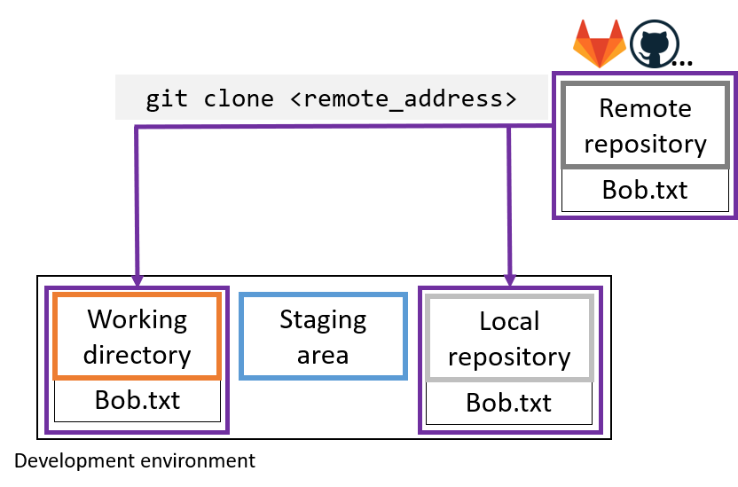
- If the clone is authorized it can also commit and push
Get changes from the remote
Local changes, publish to remote:
git pushRemote changes, pull to local:
git pull
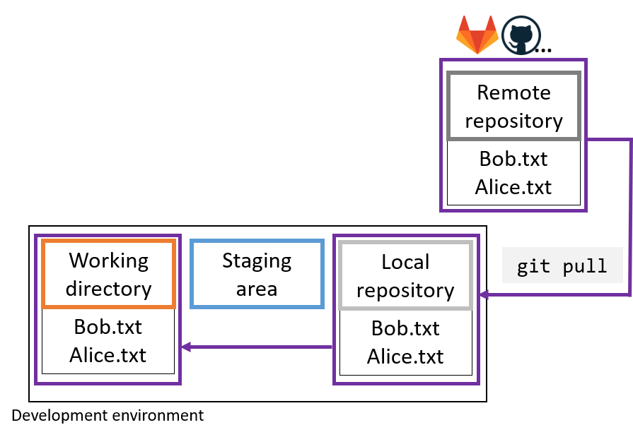
A simple collaboration workflow
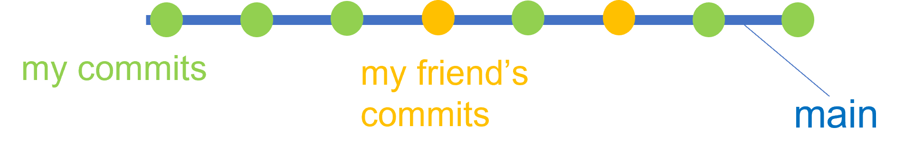
- By default: Everything on one branch (main)
- Branches are connections between specific commits
- Basic idea: Pull newest version before you start working, push new version after you are done
A more complex collaboration workflow
- You can also have multiple branches of the same project
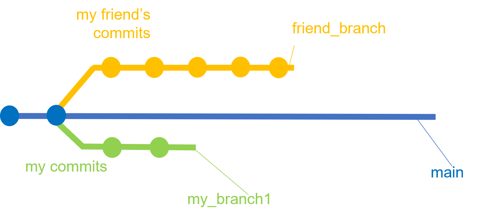
A more complex collaboration workflow
- Branches can be merged using
git merge
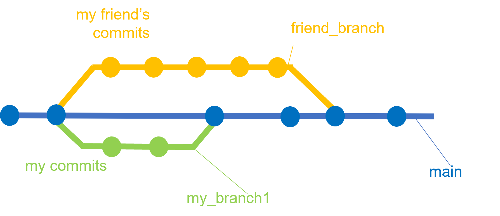
Remote repository platforms
The combination of Git and a remote repository platform unlocks a lot of possibilities!
- Advanced workflow features for collaboration and open-source development
- Issues and pull requests
- Publishing and sharing of projects
- Easily connect with Zenodo to get a DOI
- Accepted by many journals
- Additional features
- Project wikis
- Project websites
Take home
- Git (+ Github) is very powerful for coding projects
- Keep track of your changes and go back if you need to
- Collaborate and share
- Can be confusing in the beginning, but Git GUIs make it intuitive
- Valuable addition to your toolbox that’s also relevant outside academia
Tips for getting started
Start using it for small projects and discover features as you go along.
Don’t get frustrated by the complexity - it will get better.
Use a GUI if you don’t like the terminal.
Get started
Command line
Follow this Git training for learning the Git concepts in the command line.
. . .
R and R Studio
There is a whole book on using Git with R that explains the setup in detail but also goes into more advanced topics.
Follow this step by step guide to set up Git and a Github connection in R and R Studio
. . .
Github Desktop
There are detailed step by step guides on how to set up Github Desktop and how to work with in the Github Desktop Documentation
Next lecture
Research compendia with R
A research compendium is a collection of all the digital parts of your research projects (data, code, documents) with the goal of your results being reproducible. You can do this in R by building an R 📦 which makes it easy to publish a fully reproducible version of your project.
. . .
📅 20th July 🕓 1-2 p.m. 📍 Webex
🔔 Subscribe to the mailing list
📧 For topic suggestions and/or feedback send me an email
Thank you for your attention :)
Questions?
References
Learn git concepts, not commands: Blogpost that explains really well the concepts of git, also more advanced ones like rebase or cherry-pick.
How to write good commit messages: Blogpost that explains why good commit messages are important and gives 7 rules for writing them.
Git cheat sheet: Always handy if you don’t remember the basic commands
Selina Baldauf // Version control with Git